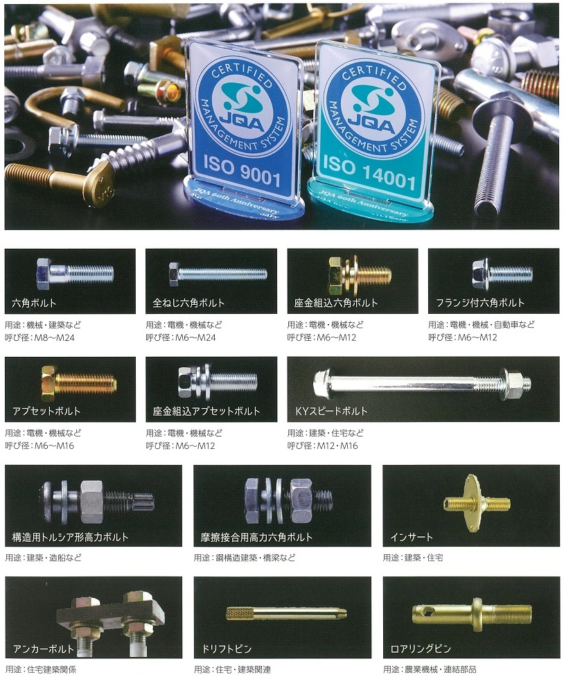

FASTENERS SINCE 1946 ／ 日東精工グループ
ねじづくり一筋、
80年。
ボルト・ナット、各種ファスナー＆パーツの製造・販売。 耐震性を担保する住宅向け締結部品、道路や鉄道などのインフラを構築する締結部品、 建設・農業向け機械の締結部品。 いずれも品質が最も求められるものです。 1946年創業。埼玉工場は加須工業団地。
数値は現行サイト「環境取組」の実績表そのままです。 中小規模の製造業で、CO₂排出量を拠点別・月別にここまで出している例は多くありません。 2023年度・2024年度・2025年度の実績も同ページで公開されています。
1946年
創業（昭和21年10月1日）
設立は昭和30年6月9日
1.5億円
資本金
40,900m²
工場敷地の合計
（本社28,600＋埼玉12,300）
1.5°C
SBT認証で沿った
パリ協定の軌道
CERTIFICATIONS
番号で示せる品質。
締結部品は、壊れたときに何が起きるかで価値が決まります。 認証は番号まで公開されています。

- JIS
- 六角ボルト（JIS B 1180）／本社
- JQ0507082
- JIS
- 六角ボルト（JIS B 1180）／埼玉
- JQ0308114
- JIS
- 摩擦接合用高力六角ボルト・ナット・平座金のセット（JIS B 1186）／埼玉
- JQ0308115
- JSS
- トルシア形高力ボルト（JSS II 09-1996）／本社
- —
- ISO
- ISO 9001（品質マネジメントシステム）
- JQA-1826
- ISO
- ISO 14001（環境マネジメントシステム）
- JQA-EM3391
- SBT
- Science Based Targets initiative（科学に基づく短期目標）
- 2030年度目標
認証区分と番号は現行サイト「製品情報」および「環境取組」の記載どおりです。 トルシア形高力ボルトは認証番号の記載がありません。
PRODUCTS
使われている場所
耐震性を担保するための住宅向け締結部品、
道路や鉄道などのインフラを構築するために欠かせない締結部品、
建設、農業向け機械の締結部品等、
いずれも品質が最も求められるものです。
現行サイト「製品情報」より。 「協栄製作所はその重責を担う製品を覚悟と責任を持って作り続けます」と続きます。
住宅
耐震性を担保するための締結部品。
インフラ
道路や鉄道などのインフラを構築するために欠かせない締結部品。 摩擦接合用高力六角ボルトとトルシア形高力ボルトの 認証を持っています。
建設・農業機械
建設、農業向け機械の締結部品。
事業内容はボルト・ナット、各種ファスナー＆パーツの製造・販売です。
QUALITY
安全と品質は、我社の命。
製品1本1本、確かな目・確かな技術で
お客様に喜ばれる製品を供給致します。
現行サイト「品質管理」より
徹底した品質管理と、さらなる高精度を追求するための研究で、 お客様満足にお応えするさまざまな製品をつくり出しています。 お客様から信頼を預かる高品質の製品を供給するのが、我々の責務と 考えています。
品質方針は「お客様に常に満足して頂ける製品を経済的に生産し供給する」。 企業理念は「我々の勤朗で豊かな生活を 社会で愛され貢献することは 社業の発展に通じる」。
技術革新が急速に進む中、製品の高度化、多品種化さらには合理化・省力化が 求められており、自動倉庫の増設や基幹システムの入替、管理体制の見直しにより ニーズに迅速に応える取り組みを強化しています。
ENVIRONMENT
測って、公開する。
ISO 14001に適合した『人』『社会』『地球』にやさしい 環境マネジメントシステムの構築・運用を行っています。 2030年度までの温室効果ガス削減目標が、 パリ協定の「1.5°C」の軌道に沿った科学的根拠に基づく目標として SBTi より認定されました。
| 拠点 | 1月 | 2月 | 3月 |
|---|---|---|---|
| 本社 | 42.48 | 52.97 | 56.67 |
| 埼玉 | 38.84 | 39.32 | 41.11 |
| 合計 | 81.32 | 92.29 | 97.78 |
掲載時点で記入済みの3か月分です。 2023年度・2024年度・2025年度の実績も現行サイトで公開されています。
取り組みの一例
- 太陽光発電システム導入
- 変電設備の更新／コンデンサー更新／力率改善
- 標準型モーターよりも電力ロスが少ない高効率モーターの導入
- 圧縮機（コンプレッサー）の集中管理による台数制御での効率化・省エネ
- 照明のLED化
- 自動倉庫を中心とした物流の情報化
- デジタルスキャン使用によるペーパーレス化
- リサイクルウエス使用などゴミの量を減らす取り組み
- 排水処理設備整備
人権基本方針も策定しています。 「従業員のゆとりと豊かさを実現し、安全で働きやすい環境を確保するとともに、 従業員の人格と個性を尊重します」。
COMPANY
会社概要
- 会社名
- 株式会社協栄製作所
- 創業
- 昭和21年10月1日（1946年）
- 設立
- 昭和30年6月9日（1955年）
- 資本金
- 1億5,000万円
- 事業内容
- ボルト・ナット、各種ファスナー＆パーツ製造・販売
- 工場敷地
- 本社工場 28,600m²／埼玉工場 12,300m²
- 本社工場
- 〒637-0014 奈良県五條市住川町1387（テクノパークなら）
TEL 0747-26-3577（本社 総務） - 埼玉工場
- 〒347-0017 埼玉県加須市南篠崎1-1（加須工業団地）
TEL 0480-65-1351（代表）／FAX 0480-65-5169（営業） - グループ
- 日東精工グループ
締結部品の仕様を、お知らせください。
六角ボルト、高力ボルト、各種ファスナー＆パーツ。 住宅、インフラ、建設・農業機械向けの実績があります。 規格、材質、数量をお知らせいただければご検討します。
埼玉工場（代表）／埼玉県加須市南篠崎1-1 FAX 0480-65-5169
本社 総務（奈良県五條市）0747-26-3577